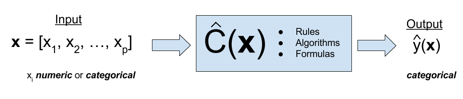

Logistic Regression
MATH/COSC 3570 Introduction to Data Science
Regression vs. Classification
Normal vs. Spam/Phishing
Fake vs. True
Normal vs. COVID vs. Smoking

The response \(Y\) in linear regression is numerical.
In many situations, \(Y\) is categorical!
A process of predicting categorical response is known as classification.
- eye color
- car brand
- true vs. fake news
Regression Function \(f(x)\) vs. Classifier \(C(x)\)

. . .

- There are many classification tools, or classifiers used to predict a categorical response.
Classification Example
Predict whether people will default on their credit card payment \((Y)\)
yesorno, based on monthly credit card balance \((X)\).Use the training sample \(\{(x_1, y_1), \dots, (x_n, y_n)\}\) to build a classifier.

Why Not Linear Regression?
- Most of the time, we code categories using numbers!
\(Y =\begin{cases} 0 & \quad \text{if not default}\\ 1 & \quad \text{if default} \end{cases}\)
- \(Y = \beta_0 + \beta_1X + \epsilon\), \(\, X =\) credit card balance
Any potential issue of this dummy variable approach?
- \(Y\) is categorical but coded as dummy variable or indicator variable
- Fit linear regression and treat it as a numerical variable.
Why Not Linear Regression?
- \(\hat{Y} = b_0 + b_1X\) estimates \(P(Y = 1 \mid X) = P(default = yes \mid balance)\)

Why Not Linear Regression?
- \(\hat{Y} = b_0 + b_1X\)
- Some estimates might be outside \([0, 1]\).

Binary Classification by Probability
- Most of the time, we code categories using numbers!
\(Y =\begin{cases} 0 & \quad \text{if not default}\\ 1 & \quad \text{if default} \end{cases}\)
First predict the probability of each category of \(Y\).
Predict probability of
defaultusing a S-shaped curve.

Framing the Problem: Binary Responses
- Treat each outcome (
default\((y = 1)\) andnot default\((y = 0)\)) as success and failure arising from separate Bernoulli trials.
What is a Bernoulli trial?
What is a binomial trial?
- A Bernoulli trial is a special case of a binomial trial when the number of trials is one:
- exactly two possible outcomes, “success” and “failure”
- the probability of success \(\pi\) is constant
In the default credit card example,
do we have exactly two outcomes?
do we have constant probability? \(P(y_1 = 1) = P(y_2 = 1) = \cdots = P(y_n = 1) = \pi?\)
Framing the Problem: Binary Responses
-
Training data \((x_1, y_1), \dots, (x_n, y_n)\) where
-
\(y_i = 1\) (
default) -
\(y_i = 0\) (
not default).
-
\(y_i = 1\) (
We first predict \(P(y_i = 1 \mid x_i) = \pi(x_i) = \pi_i\)
The probability \(\pi\) changes with the value of predictor \(x\)!
. . .
\(X =\)
balance. \(x_1 = 2000\) has a larger \(\pi_1 = \pi(2000)\) than \(\pi_2 = \pi(500)\) with \(x_2 = 500\).Credit cards with a higher balance is more likely to be default.
Binary Responses with Nonconstant Probability
-
Training data \((x_1, y_1), \dots, (x_n, y_n)\) where
-
\(y_i = 1\) (
default) -
\(y_i = 0\) (
not default).
-
\(y_i = 1\) (
First predict \(P(y_i = 1 \mid x_i) = \pi(x_i) = \pi_i\)
The probability \(\pi\) changes with the value of predictor \(x\)!

. . .
\(X =\)
balance. \(x_1 = 2000\) has a larger \(\pi_1 = \pi(2000)\) than \(\pi_2 = \pi(500)\) with \(x_2 = 500\).Credit cards with a higher balance is more likely to be default.
Logistic Regression
Instead of predicting \(y_i\) directly, we use predictors to model its probability of success, \(\pi_i\).
But how?
. . .
- Transform \(\pi \in (0, 1)\) into another variable \(\eta \in (-\infty, \infty)\). Then construct a linear predictor on \(\eta\): \[\eta_i = \beta_0 + \beta_1 x_i\]
. . .
- Logit function: For \(0 < \pi < 1\)
\[\eta = \text{logit}(\pi) = \ln\left(\frac{\pi}{1-\pi}\right)\]
- The logit function takes a value \(\pi \in (0, 1)\) and maps it to a value \(\eta \in (-\infty, \infty)\).
Logit function \(\eta = \text{logit}(\pi) = \ln\left(\frac{\pi}{1-\pi}\right)\)

Logistic Function
- Assume \(\pi\) is affected by the linear function \(\beta_0 + \beta_1x\) with the logistic transformation:
\[\pi(x) = \frac{1}{1+\exp(-(\beta_0 + \beta_1x))}\]
. . .
Does the logistic function guarantee that \(\pi \in (0, 1)\) for any value of \(\beta_0\), \(\beta_1\), and \(x\)?
. . .
Goal: Get estimates \(\hat{\beta}_0\) and \(\hat{\beta}_1\), and therefore \(\hat{\pi}\)!
\[\small \hat{\pi}(x) = \frac{1}{1+\exp(-\hat{\beta}_0-\hat{\beta}_1 x_{})}\]
Logistic Function
The logistic function takes a value \(\eta \in (-\infty, \infty)\) and maps it to a value \(\pi \in (0, 1)\).
Logistic function: \[\pi = \text{logistic}(\eta) = \frac{1}{1+\exp(-\eta)} \in (0, 1)\]
. . .
- So once \(\eta\) is estimated by the linear predictor, we use the logistic function to transform \(\eta\) back to the probability.
Logistic Function \(\pi(x) = \text{logistic}(\beta_0 + \beta_1x) = \frac{\exp(\beta_0 + \beta_1 x)}{1+\exp(\beta_0 + \beta_1 x)}\)


beta_0 says where the switch happens
beta_1 says how quickly the switch happens
negative beta_1 means the switch goes the other way
Simple Binary Logistic Regression Model
For \(i = 1, \dots, n\), and with one predictor \(X\): \[(Y_i \mid X = x_i) = \begin{cases} 1 & \quad \text{with probability } \pi(x_i)\\ 0 & \quad \text{with probability } 1 - \pi(x_i) \end{cases}\]
\[\pi(x_i) = \frac{1}{1+\exp(-(\beta_0+\beta_1 x_{i}))}\]
Goal: Get estimates \(\hat{\beta}_0\) and \(\hat{\beta}_1\), and therefore \(\hat{\pi}\)!
\[\small \hat{\pi}(x) = \frac{1}{1+\exp(-\hat{\beta}_0-\hat{\beta}_1 x_{})}\]
- with sample size \(n\) and with \(k\) predictors, we have the logistic regression model like this
- First, we have a probability distribution Bernoulli describing how the outcome or response data are generated.
- \(Y_i \mid {\bf x}_i; \pi_i \sim \text{Bern}(p_i)\), \({\bf x}_i = (x_{1,i}, \cdots, x_{k,i})\), \(i = 1, \dots, n\)
- Then we have a link function, logit function, that relates the linear regression to the parameter of the outcome distribution, which is the parameter \(p\), the probability of success in the Bernoulli distribution.
- \(\text{logit}(\pi_i) = \eta_i = \beta_0+\beta_1 x_{1,i} + \cdots + \beta_k x_{k,i}\)
Probability Curve
- The relationship between \(\pi(x)\) and \(x\) is not linear! \[\pi(x) = \frac{1}{1+\exp(-\beta_0-\beta_1 x)}\]
- The amount that \(\pi(x)\) changes due to a one-unit change in \(x\) depends on the current value of \(x\).
- Regardless of the value of \(x\), if \(\beta_1 > 0\), increasing \(x\) will be increasing \(\pi(x)\).


Interpretation of Coefficients
The ratio \(\frac{\pi}{1-\pi} \in (0, \infty)\) is called the odds of some event.
- Example: If 1 in 5 people will default, the odds is 1/4 since \(\pi = 0.2\) implies an odds of \(0.2/(1−0.2) = 1/4\).
\[\ln \left( \frac{\pi(x)}{1 - \pi(x)} \right)= \beta_0 + \beta_1x\]
- Increasing \(x\) by one unit
- changes the log-odds by \(\beta_1\)
- multiplies the odds by \(e^{\beta_1}\)
- \(\beta_1\) does not correspond to the change in \(\pi(x)\) associated with a one-unit increase in \(x\).
- \(\beta_1\) is the change in log odds associated with one-unit increase in \(x\).
Fit Logistic Regression
bodydata <- read_csv("./data/body.csv")
body <- bodydata |>
select(GENDER, HEIGHT) |>
mutate(GENDER = as.factor(GENDER))
body |> slice(1:4)# A tibble: 4 × 2
GENDER HEIGHT
<fct> <dbl>
1 0 172
2 1 186
3 0 154.
4 1 160.GENDER = 1if MaleGENDER = 0if FemaleUse
HEIGHT(centimeter, 1 cm = 0.39 in) to predict/classifyGENDER: whether one is male or female.
Logistic Regression - Data Summary
table(body$GENDER)
0 1
147 153 body |> ggplot(aes(x = GENDER, y = HEIGHT)) + geom_boxplot()
Logistic Regression - Model Fitting
Specify the model with
logistic_reg()
Use
"glm"instead of"lm"as the engine
library(tidymodels)
show_engines("logistic_reg")# A tibble: 7 × 2
engine mode
<chr> <chr>
1 glm classification
2 glmnet classification
3 LiblineaR classification
4 spark classification
5 keras classification
6 stan classification
7 brulee classificationLogistic Regression Model Result
# logis_out$fit$coefficients- \(\hat{\eta} = \ln \left( \frac{\hat{\pi}}{1 - \hat{\pi}}\right) = -40.55 + 0.24 \times \text{HEIGHT}\)
. . .
- One cm increase in
HEIGHTincreases the log odds of being male by 0.24 units. - The odds ratio, \(\widehat{OR} = \frac{\text{odds}_{x+1}}{\text{odds}_{x}} = e^{\hat{\beta}_1} = e^{0.24} = 1.273\).
- The odds of being male increases by 27.3% with additional one cm of
HEIGHT.
Logistic Regression - Model Fitting
- Define
family = "binomial"
logis_out <- logistic_reg() |>
fit(GENDER ~ HEIGHT,
data = body,
family = "binomial")
logis_out_fit <- logis_out$fit. . .
logis_out_fit$coefficients(Intercept) HEIGHT
-40.548 0.242 . . .
Pr(GENDER = 1) When HEIGHT is 170 cm
\[ \hat{\pi}(x = 170) = \frac{1}{1+\exp(-\hat{\beta}_0-\hat{\beta}_1 x)} = \frac{1}{1+\exp(-(-40.55) - 0.24 \times 170)} = 63.3\%\]
predict(logis_out_fit, newdata = data.frame(HEIGHT = 170), type = "response") 1
0.633 Probability Curve
1 2 3 4 5 6
0.7369 0.9880 0.0383 0.1480 0.9383 0.4375 body$HEIGHT |> head()[1] 172 186 154 160 179 167
- 160 cm, Pr(male) = 0.13
- 170 cm, Pr(male) = 0.63
- 180 cm, Pr(male) = 0.95
21-Logistic Regression
In lab.qmd ## Lab 21 section,
Use our fitted logistic regression model to predict whether you are male or female! Change
175to your height (cm).Use the converter to get your height in cm!
# Fit the logistic regression
predict(logis_out_fit, newdata = data.frame(HEIGHT = 175),
type = "response") 1
0.853 sklearn.linear_model
sklearn.linear_model.LogisticRegression
library(reticulate); py_install("scikit-learn")import numpy as np
import pandas as pd
from sklearn.linear_model import LogisticRegression. . .
body = pd.read_csv('./data/body.csv')
x = np.array(body[['HEIGHT']]) ## 2d array with one column
y = np.array(body['GENDER']) ## 1d arrayx[0:4]array([[172. ],
[186. ],
[154.4],
[160.5]])y[0:4]array([0, 1, 0, 1])sklearn.linear_model.LogisticRegression
clf = LogisticRegression().fit(x, y)
clf.coef_array([[0.24154889]])clf.intercept_array([-40.51727266]). . .
new_height = np.array([160, 170, 180]).reshape(-1, 1)clf.predict(new_height)array([0, 1, 1]). . .
clf.predict_proba(new_height)array([[0.86639467, 0.13360533],
[0.36678399, 0.63321601],
[0.04919451, 0.95080549]])Evaluation
Evaluation Metrics1
- Confusion Matrix
| True 0 | True 1 | |
|---|---|---|
| Predict 0 | True Negative (TN) | False Negative (FN) |
| Predict 1 | False Positive (FP) | True Positive (TP) |
Sensitivity (True Positive Rate) \(= P( \text{predict 1} \mid \text{true 1}) = \frac{TP}{TP+FN}\)
Specificity (True Negative Rate) \(= P( \text{predict 0} \mid \text{true 0}) = \frac{TN}{FP+TN}\)
Accuracy \(= \frac{TP + TN}{TP+FN+FP+TN}\)
Confusion Matrix
Receiver Operating Characteristic (ROC) Curve
| True 0 | True 1 | |
|---|---|---|
| Predict 0 | True Negative (TN) | False Negative (FN) |
| Predict 1 | False Positive (FP) | True Positive (TP) |
- Receiver operating characteristic (ROC) curve plots True Positive Rate (Sensitivity) vs. False Positive Rate (1 - Specificity)

ROC Curve using 
roc_df <- tibble(truth = gender_true,
prob = 1 - pred_prob,
pred = gender_pred)
roc_df# A tibble: 300 × 3
truth prob pred
<fct> <dbl> <dbl>
1 0 0.263 1
2 1 0.0120 1
3 0 0.962 0
4 1 0.852 0
5 1 0.0617 1
6 1 0.562 0
# ℹ 294 more rows# A tibble: 10 × 3
.threshold specificity sensitivity
<dbl> <dbl> <dbl>
1 -Inf 0 1
2 0.00207 0 1
3 0.00426 0.00654 1
4 0.00492 0.0131 1
5 0.00673 0.0196 1
6 0.994 1 0.0272
7 0.996 1 0.0204
8 0.997 1 0.0136
9 1.000 1 0.00680
10 Inf 1 0 ROC Curve using
gender_roc |> autoplot() +
theme(axis.title = element_text(size = 20),
axis.text = element_text(size = 16))
- theme(axis.title = element_text(size = 20), axis.text = element_text(size = 16))
Comparing Models
Which model performs better?